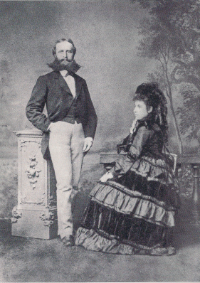
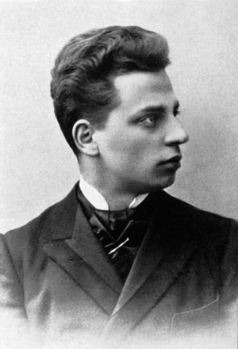
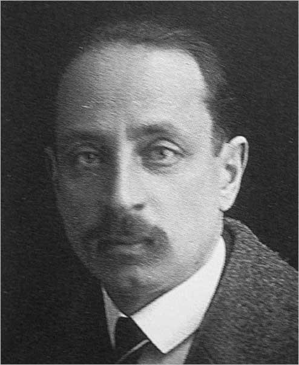

Kalendarium
Niniejsze kalendarium, ilustrowane fotografiami z epoki, odtwarza rok po roku dzieje życia artysty, dokumentuje publikacje jego utworów oraz sytuuje jego twórczość na tle historii literatury i kultury europejskiej.
Josef Rilke i Sophie Entz, rodzice poety
1838
W Schwabitz (Czechy) urodził się Josef Rilke, ojciec poety.
1840–1917 Auguste Rodin
1847–1885 Jens Peter Jacobsen
1851
Sophie Entz, matka poety, przychodzi na świat w Pradze.
1855–1934 Marie księżna von Thurn und Taxis-Hohenlohe
1856–1939 Sigmund Freud
1861–1937 Lou Andreas-Salomé
1862–1946 Gerhart Hauptmann
1864–1918 Frank Wedekind
1868–1934 Stefan George
1869–1951 André Gide
1871–1945 Paul Valéry
1873
Ślub Josefa i Sophie, rodziców poety.
1874–1929 Hugo von Hofmannsthal
1874–1950 Anton Kippenberg
1875–1955 Tomasz Mann
1875
4 grudnia w Pradze przychodzi na świat René Karl Wilhelm Johann Josef Maria Rilke.
1876–1907 Paula Becker-Modersohn
1877–1962 Hermann Hesse
1878–1962 Nanny Wunderly-Volkart
1878
21 listopada w Bremie urodziła się Clara Westhoff.
1880–1942 Robert Musil
1881–1942 Stefan Zweig
René Rilke z ojcem Josefem, rok 1884
1882
Do roku 1884 Rilke uczęszcza w Pradze do szkoły prowadzonej przez pijarów. Po rozstaniu rodziców w roku 1884 Rilke pozostaje pod opieką matki.
1883–1924 Franz Kafka
1886–1969 Baladyna Klossowska
1886–1980 Oskar Kokoschka
1886
1 września Rilke wstępuje do szkoły kadeckiej w St. Pölten. Pisze swoje pierwsze wiersze.
1888–1965 T.S. Eliot
1890–1969 Franz Werfel
1890
Po ukończeniu szkoły w St. Pölten Rilke kontynuuje naukę w szkole kadeckiej w Mährisch-Weißkirchen.
Stefan George Hymny
1891–1969 Lulu Albert-Lazard
1891
Rilke opuszcza szkołę ze względów zdrowotnych. Rozpoczyna naukę w Akademii Handlowej w Linzu, którą porzuca w połowie następnego roku.
Frank Wedekind Przebudzenie się wiosny
1892
Od jesieni Rilke samodzielnie przygotowuje się do matury.
Gerhart Hauptmann Tkacze
1893
Początek przyjaźni z Valerie von David-Rhonfeld.
1894
Ukazuje się pierwszy tomik poetycki Rilkego Życie i pieśni (Leben und Lieder).
1895
Rilke otrzymuje w Pradze maturę „z wyróżnieniem”; od semestru zimowego rozpoczyna studia na Uniwersytecie Praskim (historia sztuki, dzieje literatury, filozofia).
Ukazuje się zbiór wierszy Ofiara dla Larów (Larenopfer). Rilke przygotowuje pierwszy numer czasopisma Wegwarten.
Theodor Fontane Effi Briest
Arthur Schnitzler Liebelei
1896
Z początkiem semestru letniego Rilke zmienia kierunek studiów i rozpoczyna naukę na wydziale prawa Uniwersytetu Praskiego. Inscenizacja sztuki Teraz i w godzinę śmierci naszej (Jetzt und in der Stunde unseres Absterbens). Rilke przeprowadza się do Monachium. Na tamtejszym uniwersytecie słucha przez dwa semestry wykładów z historii sztuki, estetyki, teorii Darwina.
Założenie czasopism „Die Jugend” oraz „Simplicissimus”.
Rilke w wieku lat dwudziestu dwu, wkrótce po przybyciu do Monachium
1897
Do początku października Rilke mieszka w Monachium. W styczniu wyjeżdża do Pragi. Na przełomie marca i kwietnia podróż do Arco, Wenecji, Meran. Od czerwca do sierpnia Rilke przebywa w Wolfratshausen. W październiku przeprowadza się do Berlina (Wilmersdorf).
Ukazuje się drukiem tom Uwieńczony marzeniem (Traumgekrönt), w Pradze ma miejsce inscenizacja dramatu Zmrożenie (Im Frühfrost).
1898
Do końca lipca Rilke przebywa w Berlinie (Wilmersdorf). W marcu wygłasza w Pradze odczyt. Kwiecień–maj: podróż do Arco, Florencji, Viareggio. W czerwcu wizyta w Pradze. Lipiec: pobyt w Sopocie. Od sierpnia Rilke mieszka w Berlinie (Schmargendorf). W drugiej połowie grudnia przebywa w Hamburgu, Bremie i Worpswede. Rilke pisze Dziennik florencki (Florenzer Tagebuch) i rozpoczyna zapiski w Dzienniku schmargendorfskim (Schmargendorfer Tagebuch).
Drukiem ukazują się Adwent (Advent), Strumień życia (Am Leben hin) oraz Bez teraźniejszości (Ohne Gegenwart).
1899
Rilke mieszka w Berlinie (Schmargendorf). W marcu podróż do Arco, Bozen, Pragi, Wiednia. Od kwietnia do czerwca Rilke wraz z Lou Andreas-Salomé przebywa w Rosji. W lipcu wraca do Berlina. Od sierpnia do połowy września gości w Bibersbergu k. Meiningen. Druga połowa września – koniec grudnia: Berlin. Powstaje wówczas pierwsza część Księgi godzin (Das Stunden-Buch). Poeta kontynuuje swój Dziennik schmargendorfski. Jesienią zapisuje pierwszą wersję Korneta.
Ukazują się Dwie opowieści praskie (Zwei Prager Geschichten), Sobie samemu na świętowanie (Mir zur Feier) oraz Biała księżniczka (Die weiße Fürstin).
Powstają czasopismo „Die Fackel” oraz wydawnictwo Insel-Verlag.
1900
Do początku października Rilke mieszka w Berlinie (Schmargendorf). Z początkiem maja wraz z Lou Andreas-Salomé wyrusza w swą drugą podróż do Rosji, gdzie przebywa do sierpnia. Od końca sierpnia do początku października gości w Worpswede. Od połowy października Rilke wynajmuje nowe mieszkanie w Berlinie (Schmargendorf). Rozpoczyna zapiski w Dzienniku z Worpswede (Worpsweder Tagebuch).
Ukazują się Powiastki o Panu Bogu (Geschichten vom lieben Gott, pierwotny tytuł: Vom lieben Gott und Anderes).
Arthur Schnitzler Reigen
Gerhart Hauptmann Michael Kramer
1900–1919 Wera Ouckama Knoop
1901
Do końca lutego Rilke mieszka w Berlinie (Schmargendorf). W marcu podróżuje do Monachium, Arco, Riva. W połowie marca odwiedza Bremę. Z końcem marca zamieszkuje w Westerwede. 28 kwietnia w Bremie poślubia Clarę Westhoff. W maju małżonkowie wyjeżdżają do sanatorium Weißer Hirsch pod Dreznem oraz do Pragi. Od czerwca zamieszkują w Westerwede. Pod koniec września Rilke przebywa w gościnie na zamku Haseldorf. Do Westerwede powraca z początkiem października. 12 grudnia na świat przychodzi córka Ruth.
We wrześniu Rilke spisuje drugą część Księgi godzin. Ukazuje się zbiór Ostatni z rodu (Die Letzten). Na scenie wystawiono sztukę Życie powszednie (Das tägliche Leben).
1902
Do końca sierpnia Rilke mieszka w Westerwede. Początek czerwca – początek lipca: wizyta na zamku Haseldorf. Z końcem sierpnia poeta przenosi się do Paryża; zamieszkuje przy rue Toullier, a od początku października przy rue de l’Abbé de l’Epée.
Ukazują się drukiem Życie powszednie (Das tägliche Leben) oraz Księga obrazów (Das Buch der Bilder).
Rilke z żoną Clarą Westhoff w Rzymie, rok 1904
1903
Do lipca Rilke mieszka w Paryżu przy rue de l’Abbé de l’Epée. Z końcem marca rusza do Viareggio, skąd wraca pod koniec kwietnia. Lipiec i sierpień spędza w Worpswede oraz w Oberneuland. Pomiędzy końcem sierpnia a początkiem września odwiedza Marienbad, Monachium, Wenecję i Florencję. W połowie września poeta przenosi się do Rzymu, gdzie zamieszkuje przy Via del Campidoglio, a potem w Villa Strohl-Fern.
Podczas pobytu w Viareggio Rilke pisze trzecią część Księgi godzin. Drukiem ukazują się książki Worpswede oraz Auguste Rodin.
1904
Do czerwca Rilke mieszka w Rzymie (Villa Strohl-Fern). W okresie od czerwca do grudnia przebywa w Danii i Szwecji. W połowie grudnia poeta zjeżdża do Oberneuland.
Rilke rozpoczyna pracę nad książką Pamiętniki Malte Lauridsa Brigge (Die Aufzeichnungen des Malte Laurids Brigge). Ukazuje się druga redakcja Pieśni o miłości i śmierci korneta Krzysztofa Rilke (Die Weise von Liebe und Tod des Cornet Christoph Rilke).
Hermann Hesse Peter Camenzind
1905
Do lutego Rilke przebywa w Oberneuland. Od marca do połowy kwietnia odbywa kurację w sanatorium Weißer Hirsch pod Dreznem. Z końcem kwietnia jest w Berlinie. Od maja do początku czerwca bawi w Worpswede. W okresie od połowy czerwca do końca lipca odwiedza Getyngę, Berlin, Treseburg w górach Harzu, Kassel, Marburg. W sierpniu jest gościem na zamku Friedelhausen. Na początku września przebywa w Darmstadt oraz w Godesbergu. Od połowy września do końca października zamieszkuje u Rodina w Meudon. Z końcem października wyrusza w podróż do Kolonii, Drezna, Pragi, Lipska; w Dreźnie i Pradze wygłasza odczyty o Rodinie. Od połowy grudnia poeta przebywa w Oberneuland.
Ukazuje się Księga godzin (Das Stunden-Buch).
1906
Do połowy maja Rilke mieszka w Meudon. W lutym wyrusza w podróż do Elberfeld, gdzie wygłasza odczyt o Rodinie. W marcu odwiedza Berlin, Hamburg (gdzie wygłasza odczyt), Worpswede. 14 marca umiera ojciec poety, Josef; Rilke wyrusza do Pragi. Z końcem marca wygłasza odczyt w Berlinie. Od połowy maja poeta wynajmuje w Paryżu mieszkanie przy rue Cassette. Od końca lipca do połowy sierpnia przebywa w Belgii. Drugą połowę sierpnia spędza w gościnie w Godesbergu. We wrześniu odwiedza zamek Friedelhausen. Październik i listopad spędza w Berlinie. W grudniu Rilke wyjeżdża na Capri.
Ukazuje się druga, znacznie poszerzona edycja Księgi obrazów, a także pierwsze książkowe wydanie Korneta.
Robert Musil Niepokoje wychowanka Törlessa
1907
Do połowy maja Rilke przebywa na Capri. W drugiej połowie maja odwiedza Neapol i Rzym. Od lipca do listopada mieszka w Paryżu przy rue Cassette. W pierwszej połowie listopada wyrusza w podróż do Pragi, Wrocławia i Wiednia, gdzie wygłasza odczyty. Z końcem listopada gości w Wenecji. Grudzień spędza w Oberneuland. W grudniu ukazują się Nowe wiersze (Neue Gedichte).
1908
Do połowy lutego Rilke przebywa w Oberneuland. Z końcem lutego wyrusza do Berlina, Monachium i Rzymu. Od końca lutego do połowy kwietnia ponownie gości na Capri. Z końcem kwietnia przebywa w Rzymie i Florencji. Począwszy od maja poeta mieszka w Paryżu; najpierw przy rue Campagne-Première, od września w pałacu Biron przy rue de Varenne.
W listopadzie Rilke pisze obydwa Requien (Pamięci przyjaciółki oraz Pamięci Wolfa hrabiego von Kalckreuth). Drukiem ukazuje się Nowych wierszy część wtóra (Der Neuen Gedichte anderer Teil).
Rilke w swym najlepszym paryskim okresie, z czasów Nowych wierszy, rok 1906
1909
Przez cały rok Rilke wynajmuje mieszkanie w pałacu Biron przy rue de Varenne. Z końcem maja wyrusza w podróż po Prowansji. Na początku września udaje się do Bad Rippoldsau. Na przełomie września i października przebywa w Awinionie. W połowie października wraca do Paryża.
1910
Rilke nadal wynajmuje mieszkanie w pałacu Biron przy rue de Varenne. W styczniu udaje się do Elberfeld (wygłasza tam odczyt), Lipska i Jeny (kolejny odczyt). W okresie od końca stycznia do połowy marca przebywa w Berlinie, Lipsku, Weimarze, zaś od połowy marca do połowy kwietnia w Rzymie. Z końcem kwietnia po raz pierwszy gości na zamku Duino. Na początku maja wyjeżdża do Wenecji. W połowie maja powraca do Paryża, gdzie pozostaje do początku lipca. Lipiec i sierpień spędza w Oberneuland, Lautschin oraz Pradze. W pierwszej połowie września gości na zamku w Janowicach. Ostatnie dni września oraz pierwszą połowę października spędza w Monachium. Pod koniec października wyjeżdża do Kolonii. W listopadzie przebywa w Paryżu. Pod koniec listopada wyrusza w podróż po Afryce Północnej; zwiedza Algier, El Kantarę, Tunis. Pod koniec roku powraca do Neapolu.
Ukazuje się drukiem jedyna powieść Rilkego Pamiętniki Malte Lauridsa Brigge (Die Aufzeichnungen des Malte Laurids Brigge).
1911
Aż do października Rilke wynajmuje mieszkanie w pałacu Biron przy rue de Varenne. W styczniu wyrusza z Neapolu w dalszą podróż do Egiptu; zwiedza Kair, odbywa wycieczkę po Nilu, gości w Heluan pod Kairem. Pod koniec marca wraca do Wenecji. Od kwietnia do połowy lipca przebywa w Paryżu. Resztę lipca oraz cały sierpień spędza w Pradze, Lautschin, Janowicach. Przez cały wrzesień podróżuje; odwiedza Lipsk, Weimar, Berlin, Monachium. Od końca września do połowy października mieszka w Paryżu. W połowie października wyrusza z Paryża w podróż przez Awinion, Ventimiglię, Bolonię do Duino, gdzie przebywa do maja następnego roku.
1912
Do maja Rilke gości na zamku Duino. Lato (aż do września) spędza w Wenecji. Od połowy września do początku października znów gości w Duino. Drugą połowę października spędza w Monachium. W listopadzie wyrusza do Hiszpanii; najpierw odwiedza Toledo, z początkiem grudnia udaje się do Kordoby i Sewilli. Od połowy grudnia przebywa w Ronda.
Na zamku Duino Rilke pisze pierwsze Elegie oraz Życie Marii (Das Marien-Leben).
Rilke w Bad Rippoldsau w Schwarzwaldzie, rok 1913
1913
Do połowy lutego Rilke przebywa w Ronda. Od końca lutego wynajmuje w Paryżu mieszkanie przy rue Campagne-Première. W czerwcu udaje się do Bad Rippoldsau. W lipcu odwiedza Getyngę, Lipsk, Weimar, Berlin. Pierwszą połowę sierpnia spędza w Heiligendamm nad Bałtykiem, zaś resztę sierpnia i początek września w Berlinie. We wrześniu i w pierwszych dniach października przebywa w Monachium. W połowie października odwiedza Drezno, Hellerau, Krummhübel (Karpacz). W połowie października wraca do Paryża.
Ukazuje się Życie Marii (Das Marien-Leben).
1914
Do połowy lipca Rilke wynajmuje mieszkanie przy rue Campagne-Première. W okresie od końca lutego do końca marca przebywa w Berlinie, Monachium, Zurychu. Z końcem marca powraca na miesiąc do Paryża. Ostatnie dni kwietnia i początek maja spędza na zamku Duino. W maju gości w Wenecji, Asyżu, Mediolanie. Od końca maja do końca lipca mieszka w Paryżu. Od końca lipca do końca września przebywa w Lipsku, Monachium, Irschenhausen. Od końca września wynajmuje mieszkanie w Monachium przy Finkenstraße. W połowie listopada udaje się do Frankfurtu i Würzburga. Koniec roku spędza w Berlinie.
W pierwszych dniach wojny Rilke pisze Pięć pieśni (Fünf Gesänge).
1915
Do połowy czerwca Rilke wynajmuje w Monachium mieszkanie przy Finkenstraße. Z początkiem stycznia powraca z Berlina. Na początku lutego wyjeżdża do Irschenhausen. Od połowy czerwca do końca października poeta mieszka w Monachium, najpierw przy Widenmayerstraße, później przy Keferstraße. W pierwszej połowie grudnia przebywa w Berlinie. Koniec grudnia spędza w Wiedniu.
W listopadzie powstaje Czwarta elegia duinejska. Ukazuje się Pięć pieśni (Fünf Gesänge / August 1914).
1916
Do początku czerwca Rilke odbywa służbę wojskową w Wiedniu; od stycznia pracuje jako pisarz w Archiwum Wojennym. Na początku lipca powraca do Monachium (do mieszkania przy Keferstraße).
1917
Do połowy lipca Rilke mieszka w Monachium przy Keferstraße. W drugiej połowie czerwca wyjeżdża nad Herrenchiemsee. W połowie lipca udaje się do Berlina. Od sierpnia do września przebywa w majątku Gut Böckel w Westfalii jako gość Herthy Koenig. Październik i listopad spędza w Berlinie. Od połowy grudnia mieszka w Monachium w Hotel Continental.
1918
Do końca maja Rilke mieszka w Monachium w Hotel Continental, później przeprowadza się do mieszkania przy Ainmillerstraße. W połowie września gości w Ohlstadt i Ansbach. Resztę roku spędza w Monachium.
Karl Kraus Die letzten Tage der Menschheit
Rilke w roku 1919, w którym porzuca na zawsze Monachium i wyjeżdża do Szwajcarii
1919
Do połowy czerwca Rilke mieszka w Monachium przy Ainmillerstraße. W połowie czerwca opuszcza Niemcy i wyjeżdża do Szwajcarii; do końca września przebywa w Bernie, Nyon, Genewie, Zurychu, Sils-Baseglia, Soglio, Lozannie. Od końca października do końca listopada poeta recytuje swe wiersze przed publicznością w Zurychu, St. Gallen, Lucernie, Bazylei, Bernie oraz Winterthur. Grudzień spędza w Locarno.
1920
Do końca lutego Rilke przebywa w Locarno. Od marca do początku czerwca gości w Schönenbergu pod Bazyleą. W połowie czerwca odwiedza Wenecję. Drugą połowę lipca znów spędza w Schönenbergu. W sierpniu i wrześniu podróżuje po Szwajcarii. W październiku odwiedza Genewę, Berno, Sion i Sierre. Z końcem października po latach nieobecności znów gości w Paryżu. Na początku listopada przebywa w Genewie i Bazylei. Od połowy listopada zamieszkuje w zamku Berg am Irchel nieopodal Zurychu.
1921
Do połowy maja Rilke mieszka w zamku Berg am Irchel. W styczniu wyjeżdża do Genewy i Zurychu. Od połowy maja do końca czerwca przebywa w Prieuré d’Etoy. Z początkiem czerwca gości w Rolle. Pod koniec czerwca odwiedza Sierre. W pierwszych dniach lipca wyjeżdża do Genewy. Z końcem lipca poeta zamieszkuje w Château de Muzot. Aż do śmierci Muzot pozostaje jego siedzibą.
1922
Od końca maja do początku lipca Rilke przebywa w Sierre. Drugą połowę sierpnia i początek września spędza w Beatenbergu nad jeziorem Thun.
Rilke doprowadza do końca cykl Elegii duinejskich (Duineser Elegien) i pisze Sonety do Orfeusza (Die Sonette an Orpheus). W tym samym czasie powstaje List młodego robotnika (Brief des jungen Arbeiters). Poeta pracuje nad przekładami wierszy Paula Valéry. Ruth Rilke, córka poety, poślubia dr. Carla Siebera.
Hermann Hesse Siddharta
T.S. Eliot Ziemia jałowa
Rilke na balkonie wieży zamkowej Muzot, jesień roku 1923
1923
W czerwcu i lipcu Rilke podróżuje po Szwajcarii. W drugiej połowie sierpnia i w pierwszych dniach września przebywa w sanatorium Schöneck. We wrześniu odwiedza Lucernę oraz zamek Malans. W październiku udaje się do Meilen i Berna. Koniec roku poeta spędza w sanatorium Val-Mont sur Territet.
Ukazują się drukiem Elegie duinejskie (Duineser Elegien) oraz Sonety do Orfeusza (Die Sonette an Orpheus).
1924
Do końca stycznia Rilke przebywa w sanatorium Val-Mont. W drugiej połowie czerwca poeta podróżuje po francuskojęzycznej Szwajcarii. Z końcem czerwca gości przez miesiąc w Ragaz. W pierwszej połowie września udaje się do Nyon, Genewy, Lozanny. Na początku listopada odwiedza Montreux i Berno. Z końcem listopada znów wyrusza do sanatorium Val-Mont.
W tym okresie powstają liczne wiersze w języku francuskim, które utworzą zbiory: Vergers (Sady), Les Quatrains Valaisans (Czterowiersze walezeńskie), Les Roses (Róże).
W połowie maja Rilke otrzymuje pierwszy list wierszem od Eriki Mitterer. Jest to początek korespondencji wierszem z młodą poetką wiedeńską.
1925
Od początku stycznia do połowy sierpnia Rilke po raz ostatni gości w Paryżu. Z końcem sierpnia odwiedza Mediolan. Od początku września do połowy października przebywa w Muzot, Bernie, Ragaz oraz Meilen. Od połowy października do połowy grudnia poeta mieszka w Muzot. Koniec roku spędza w sanatorium Val-Mont.
1926
Do końca maja Rilke pozostaje w sanatorium Val-Mont. Pod koniec maja wyjeżdża do Vevey i Lozanny. Od połowy lipca do końca sierpnia gości w Ragaz. Wrzesień spędza w Lozannie, październik i listopad w Sierre. W grudniu ponownie udaje się do sanatorium Val-Mont.
Powstają dalsze wiersze w języku francuskim oraz przekłady z Valéry'ego. Drukiem ukazują się Vergers suivi des Quatrains Valaisans.
29 grudnia Rilke umiera w Val-Mont.
1927
2 stycznia: pogrzeb Rilkego na cmentarzu w Raron (kanton Valais).
Publikacja Wierszy zebranych (Gesammelte Werke I-VI).
1931
Śmierć matki, Sophie Rilke.
1954
Umiera żona poety, Clara Rilke-Westhoff.
1972
Umiera córka poety, Ruth Sieber-Rilke.